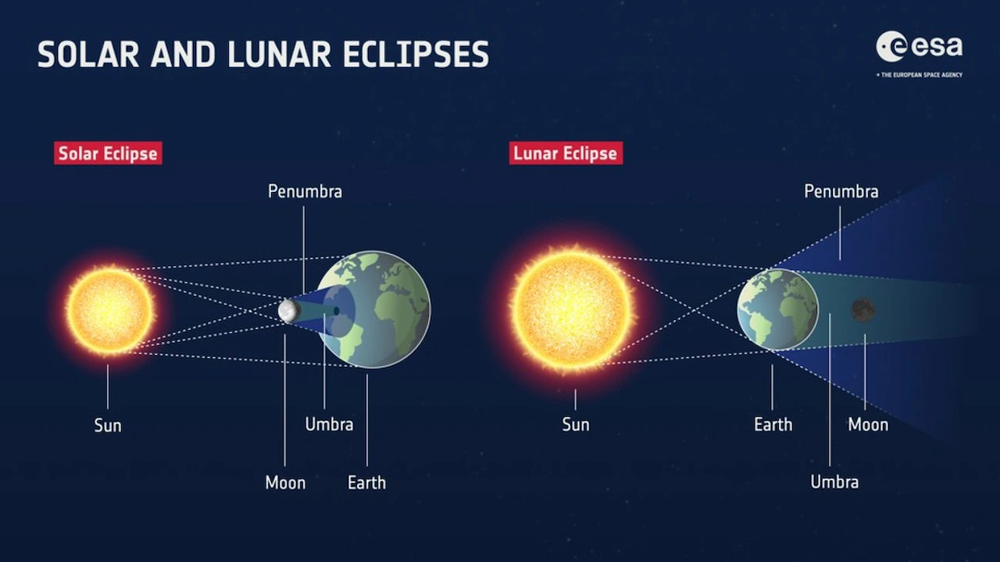
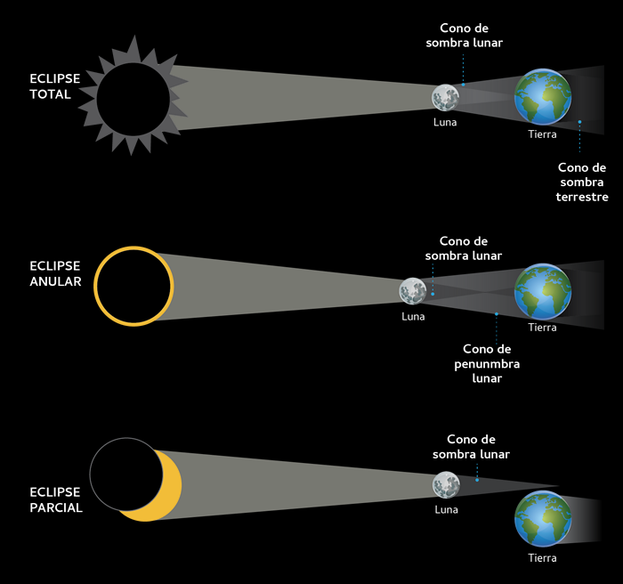
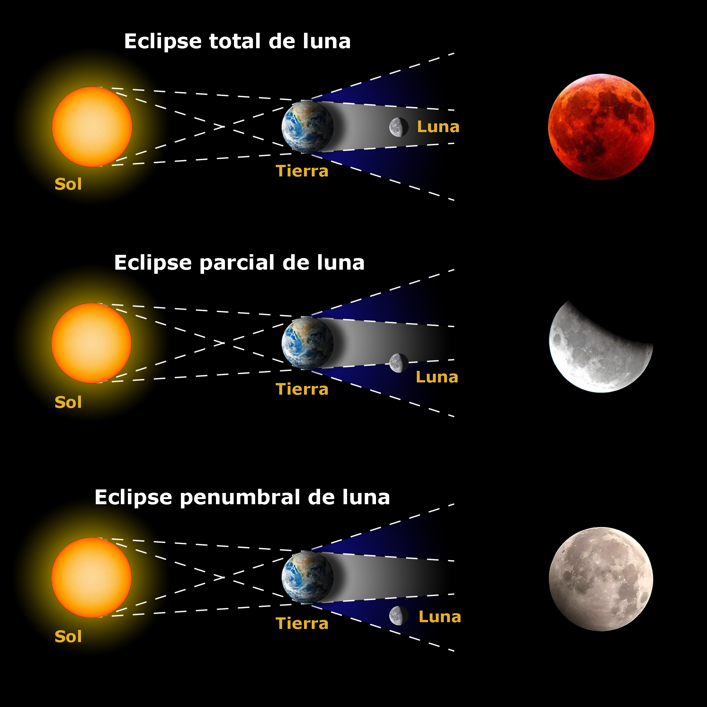

Un eclipse es un fenómeno astronómico que ocurre cuando un cuerpo celeste se alinea y pasa por delante de otro, ocultándolo total o parcialmente a la vista de un observador o proyectando su sombra sobre él.

Un eclipse es un fenómeno astronómico que ocurre cuando un cuerpo celeste se alinea y pasa por delante de otro, ocultándolo total o parcialmente a la vista de un observador o proyectando su sombra sobre él.

Un eclipse solar ocurre cuando la Luna se interpone exactamente entre el Sol y la Tierra, bloqueando la luz solar y proyectando su sombra sobre una región de nuestro planeta durante el día.
Este fenómeno sucede únicamente durante la fase de luna nueva, cuando el satélite se encuentra en el lado iluminado por el Sol pero oculto para nosotros. No ocurren todos los meses porque la órbita de la Luna está ligeramente inclinada respecto a la de la Tierra, por lo que los tres astros raras veces se alinean de forma perfecta.

Un eclipse lunar ocurre cuando la Tierra se interpone exactamente entre el Sol y la Luna, bloqueando la luz solar y proyectando su sombra sobre la superficie de nuestro satélite natural.
Este fenómeno sucede únicamente durante la fase de luna llena, cuando los tres cuerpos celestes quedan perfectamente alineados. La Luna no se vuelve invisible, sino que adquiere un tono rojizo o cobrizo (llamado «luna de sangre») porque la atmósfera terrestre filtra la luz del Sol y desvía solo los tonos rojos hacia ella.

Durante los breves minutos en los que la Luna cubre al 100 % la fotosfera del Sol, se desencadena una secuencia de fenómenos ópticos y atmosféricos imposibles de observar en cualquier otro momento.
Instantes antes de que el Sol quede oculto por completo, los últimos rayos de luz se filtran a través de los valles y cráteres del irregular relieve lunar, creando una cadena de puntos luminosos en el borde oscuro de la Luna.
Cuando solo queda visible una última «perla» brillante de la fotosfera y comienza a asomar el halo interior de la corona, el conjunto dibuja en el cielo la silueta inconfundible de un anillo con un diamante resplandeciente.
Al desaparecer el resplandor principal, se distingue durante unos segundos un fino borde de color rosa intenso o rojizo alrededor de la Luna (la cromosfera), junto a lenguas de plasma magnetizado que emergen del Sol.
Es el espectáculo central de la totalidad. La atmósfera exterior del Sol se despliega en filamentos nacarados moldeados por su campo magnético, mientras el cielo adquiere un tono azul cobalto profundo y aparecen estrellas y planetas.
La turbulencia atmosférica sobre el fino hilo de luz solar proyecta ondas tenues de luz y sombra sobre el suelo (bandas de sombra), mientras todo el horizonte se tiñe de tonos anaranjados como un crepúsculo simultáneo de 360 grados.
El proceso ocurre en orden inverso: surge un segundo anillo de diamantes seguido de las perlas de Baily por el limbo opuesto de la Luna. Este destello marca el final de la totalidad y el momento de volver a colocarse las gafas homologadas.